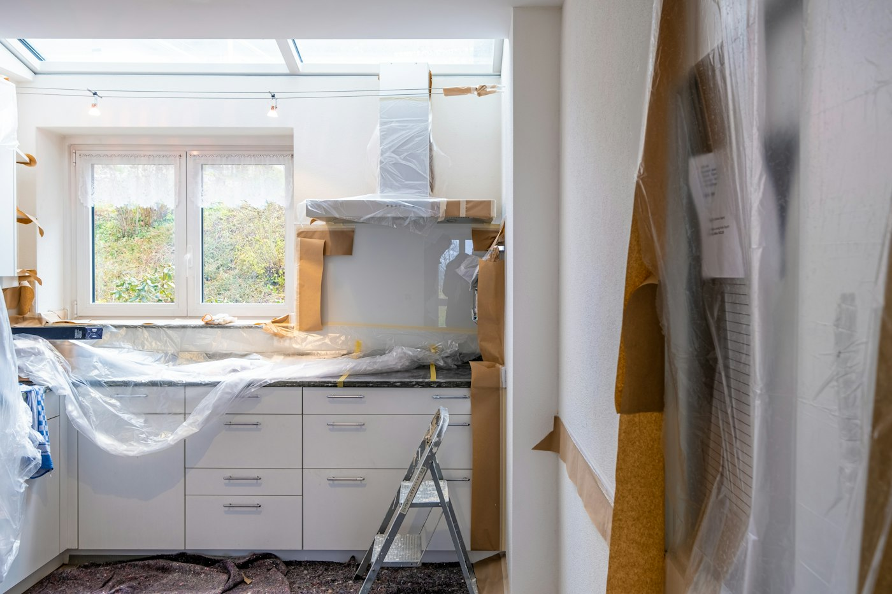

Your Home Deserves Quality Care.
At KSK Handyman Services LLC, we believe home repairs and improvements should be handled with care, attention, and a commitment to doing the job properly.

Meet KSK Handyman Services LLC
KSK Handyman Services LLC is a handyman and home repair business owned by Mr. Kevin. The business focuses on helping homeowners address everyday repair, maintenance, and improvement needs through practical solutions and attentive service.
Whether you're dealing with a small repair or planning improvements around your home, our goal is to make the process straightforward and help you feel confident about the work being done.
How We Work
Careful Workmanship
We believe the little details make a difference in every home repair project.
Clear Communication
We aim to understand your needs and communicate clearly throughout the process.
Respect for Your Home
We approach every project with care for your property and living space.
Let's Take Care of Your Next Home Project.
Reach out to discuss your repair or maintenance needs and request a quote.
Contact Us Today →